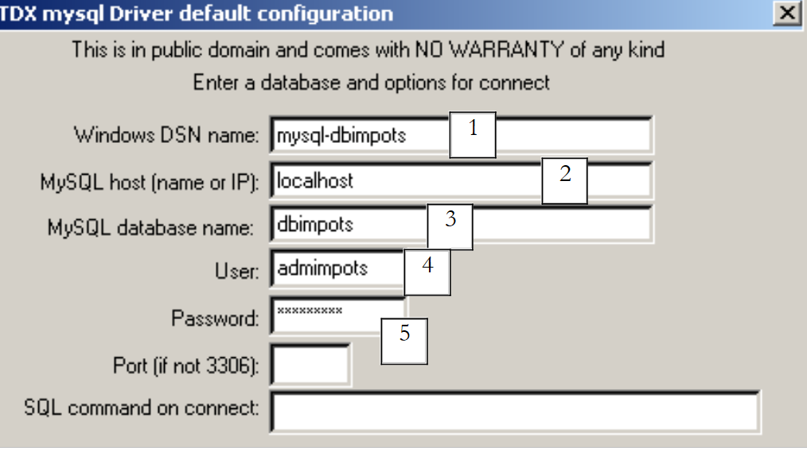
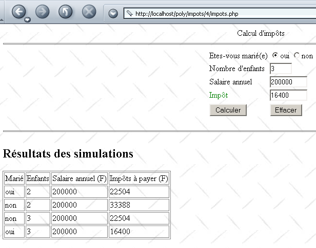

4. 示例
4.1. 税务应用：简介
在此我们介绍应用程序 IMPOTS，后续将多次使用该程序。这是一个用于计算纳税人应纳税额的应用程序。我们以一种简化情况为例，即纳税人仅需申报工资收入：
- 若未婚，则计算该雇员的税额分摊数 nbParts=nbEnfants/2 +1； 已婚者为 nbEnfants/2+2，其中 nbEnfants 代表其子女数量。
- 若其子女数≥3，则额外增加半份
- 计算其应税收入 R=0.72*S，其中 S 为其年薪
- 计算其家庭系数 QF=R/nbParts
- 计算其应纳税额 I。请看下表：
12620.0 | 0 | 0 |
13190 | 0.05 | 631 |
15640 | 0.1 | 1290.5 |
24740 | 0.15 | 2072.5 |
31810 | 0.2 | 3309.5 |
39970 | 0.25 | 4900 |
48360 | 0.3 | 6898.5 |
55790 | 0.35 | 9316.5 |
92970 | 0.4 | 12106 |
127860 | 0.45 | 16754.5 |
151250 | 0.50 | 23147.5 |
172040 | 0.55 | 30710 |
195000 | 0.60 | 39312 |
0 | 0.65 | 49062 |
每行有 3 个字段。要计算税款 I，需查找满足 QF<=字段1 的第一行。例如，若 QF=23000，则会找到该行
此时税额 I 等于 0.15*R - 2072.5*nbParts。 如果 QF 使得关系 QF<=field1 从未成立，则使用最后一行中的系数。此处为：
由此得出税额 I=0.65*R - 49062*nbParts。
定义不同税率档次的数据存储在ODBC-MySQL数据库中。MySQL是基于SGBD开发的开源软件，可在包括Windows和Linux在内的多种平台上使用。 使用该 SGBD 文件，已创建名为 dbimpots 的数据库，其中包含一个名为 impots 的表。数据库访问通过用户名/密码（此处为 admimpots/mdpimpots）进行控制。下图展示了如何使用 MySQL 访问 dbimpots 数据库：
C:\Program Files\EasyPHP\mysql\bin>mysql -u admimpots -p
Enter password: *********
Welcome to the MySQL monitor. Commands end with ; or \g.
Your MySQL connection id is 18 to server version: 3.23.49-max-nt
Type 'help;' or '\h' for help. Type '\c' to clear the buffer.
mysql> use dbimpots;
Database changed
mysql> show tables;
+--------------------+
| Tables_in_dbimpots |
+--------------------+
| impots |
+--------------------+
1 row in set (0.00 sec)
mysql> describe impots;
+---------+--------+------+-----+---------+-------+
| Field | Type | Null | Key | Default | Extra |
+---------+--------+------+-----+---------+-------+
| limites | double | YES | | NULL | |
| coeffR | double | YES | | NULL | |
| coeffN | double | YES | | NULL | |
+---------+--------+------+-----+---------+-------+
3 rows in set (0.02 sec)
mysql> select * from impots;
+---------+--------+---------+
| limites | coeffR | coeffN |
+---------+--------+---------+
| 12620 | 0 | 0 |
| 13190 | 0.05 | 631 |
| 15640 | 0.1 | 1290.5 |
| 24740 | 0.15 | 2072.5 |
| 31810 | 0.2 | 3309.5 |
| 39970 | 0.25 | 4900 |
| 48360 | 0.3 | 6898 |
| 55790 | 0.35 | 9316.5 |
| 92970 | 0.4 | 12106 |
| 127860 | 0.45 | 16754 |
| 151250 | 0.5 | 23147.5 |
| 172040 | 0.55 | 30710 |
| 195000 | 0.6 | 39312 |
| 0 | 0.65 | 49062 |
+---------+--------+---------+
14 rows in set (0.00 sec)
mysql>quit
数据库 dbimpots 按以下方式转换为数据源 ODBC：
- 启动 32 位数据源管理器 ODBC

- 使用按钮 [Add] 添加新的数据源 ODBC

- 指定驱动程序 MySQL，并执行 [Terminer]
 |
- 驱动程序 MySQL 需要一些信息：
1 | 需为数据源 ODBC 指定的名称 DSN —— 可能为任意名称 |
2 | 运行 SGBD 的机器 MySQL - 此处为 localhost。值得注意的是，该数据库可能是远程数据库。 使用数据源 ODBC 的本地应用程序不会察觉到这一点。我们的应用程序 PHP 就是如此。 |
3 | 要使用的数据库 MySQL。MySQL 是一个 SGBD，用于管理关系型数据库，即通过关系相互关联的表集合。此处指定了所管理的数据库名称。 |
4 | 具有该数据库访问权限的用户名 |
5 | 其密码 |
4.2. 税务应用程序：类 ImpotsDSN
我们的应用程序将基于类 PHP ImpotsDSN，该类具有以下属性、构造函数和方法：
<?php
...
// 属性
var $limites; // 限值表
var $coeffR; // coeffR 表
var $coeffN; // coeffN 表
var $erreurs; // 错误表
- 我们在问题陈述中看到，我们需要三组数据
12620.0 | 0 | 0 |
13190 | 0.05 | 631 |
15640 | 0.1 | 1290.5 |
24740 | 0.15 | 2072.5 |
31810 | 0.2 | 3309.5 |
39970 | 0.25 | 4900 |
48360 | 0.3 | 6898.5 |
55790 | 0.35 | 9316.5 |
92970 | 0.4 | 12106 |
127860 | 0.45 | 16754.5 |
151250 | 0.50 | 23147.5 |
172040 | 0.55 | 30710 |
195000 | 0.60 | 39312 |
0 | 0.65 | 49062 |
第一列将放置在类 ImotsDSN 的属性 $limites 中，第二列放置在属性 $coeffR 中，第三列放置在 $coeffN 中。 这三个属性由类的构造函数初始化。构造函数将从数据源 ODBC 中获取数据。在对象构建过程中可能会发生各种错误。这些错误以错误消息数组的形式报告在属性 $erreurs 中。
- 构造函数接收一个名为 $impots 的字典作为参数，该字典包含以下字段：
// dsn：包含极限表值的数据源的名称，ODBC，coeffR，coeffN
// user：对数据源 ODBC 具有读取权限的用户名
// pwd：其密码
// table：包含值（限值、coeffR、coeffN）的表名
// 限值：包含限值数据的列名
// coeffR：包含值 coeffR 的列名
// coeffN：包含 coeffN 值的列名
构造函数参数提供了从数据源 ODBC 中读取数据所需的所有信息
- 一旦创建了 ImpotsDSN 对象，该类的用户即可调用该对象的 calculerImpots 方法。该方法接收一个 $personne 字典作为参数：
完整的类定义如下：
<?php
// 类定义 objImpots
class ImpotsDSN{
// 属性：3个数据表
var $limites; // 限额表
var $coeffR; // coeffR 表
var $coeffN; // coeffN表
var $erreurs; // 错误表
// 生成器
function ImpotsDSN($impots){
// $impots：包含以下字段的字典
// dsn：包含极限表值 ODBC、coeffR、coeffN 的数据源的名称 DSN
// user：对数据源 ODBC 具有读取权限的用户名
// pwd：其密码
// table：包含值（限值、coeffR、coeffN）的表名
// 限值：包含限值数据的列名
// coeffR：包含值 coeffR 的列名
// coeffN：包含 coeffN 值的列名
// 起初没有错误
$this->erreurs=array();
// 调用验证
if (! isset($impots[dsn]) || ! isset($impots[user]) ||! isset($impots[pwd]) ||! isset($impots[table]) ||
! isset($impots[limites]) ||! isset($impots[coeffR]) ||! isset($impots[coeffN])){
// 错误
$this->erreurs[]="Appel incorrect";
// 结束
return;
}//if
// 打开数据库DSN
$connexion=odbc_connect($impots[dsn],$impots[user],$impots[pwd]);
// 错误？
if(! $connexion){
// 错误
$this->erreurs[]="Impossible d'ouvrir la base DSN [$impots[dsn]] (".odbc_error().")";
// 结束
return;
}//if
// 向数据库发送请求
$requête=odbc_prepare($connexion,"select $impots[limites],$impots[coeffR],$impots[coeffN] from $impots[table]");
if(! odbc_execute($requête)){
// 错误
$this->erreurs[]="Impossible d'expoiter la base DSN [$impots[dsn]] (".odbc_error().")";
// 结束
odbc_close($connexion);
return;
}//if
// 查询结果处理
$this->limites=array();
$this->coeffR=array();
$this->coeffN=array();
while(odbc_fetch_row($requête)){
// 再一行
$this->limites[]=odbc_result($requête,$impots[limites]);
$this->coeffR[]=odbc_result($requête,$impots[coeffR]);
$this->coeffN[]=odbc_result($requête,$impots[coeffN]);
}//while
// 关闭数据库
odbc_close($connexion);
}//构造函数
// --------------------------------------------------------------------------
function calculer($personne){
// $personne["marié"] : 是, 否
// $personne["enfants"] : 子女数量
// $personne["salaire"] : 年薪
// 对象状态是否正常？
if (! is_array($this->erreurs) || count($this->erreurs)!=0) return -1;
// 调用验证
if (! isset($personne[marié]) || ! isset($personne[enfants]) ||! isset($personne[salaire])){
// 错误
$this->erreurs[]="Appel incorrect";
// 结束
return -1;
}//if
// 参数是否正确？
$personne[marié]=strtolower($personne[marié]);
if($personne[marié]!=oui && $personne[marié]!=non){
// 错误
$this->erreurs[]="Statut marital [$personne[marié]] incorrect";
}//if
if(! preg_match("/^\s*\d{1,3}\s*$/",$personne[enfants])){
// 错误
$this->erreurs[]="Nombre d'enfants [$personne[enfants]] incorrect";
}//if
if(! preg_match("/^\s*\d+\s*$/",$personne[salaire])){
// 错误
$this->erreurs[]="salaire [$personne[salaire]] incorrect";
}//if
// 有错误吗？
if(count($this->erreurs)!=0) return -1;
// 份额数
if($personne[marié]==oui) $nbParts=$personne[enfants]/2+2;
else $nbParts=$personne[enfants]/2+1;
// 如果至少有3个孩子，则增加1/2份
if($personne[enfants]>=3) $nbParts+=0.5;
// 应税收入
$revenuImposable=0.72*$personne[salaire];
// 家庭分摊系数
$quotient=$revenuImposable/$nbParts;
// 被放置在限额表的末尾，以终止后续循环
$this->limites[$this->nbLimites]=$quotient;
// 计算税额
$i=0;
while($quotient>$this->limites[$i]) $i++;
// 由于将 $quotient 放置在 $limites 表的末尾，因此前面的循环
// 不能超出数组 $limites
// 现在可以计算税款
return floor($revenuImposable*$this->coeffR[$i]-$nbParts*$this->coeffN[$i]);
}//calculImpots
}//税种
?>
一个测试程序可以如下所示：
<?php
// 库
include "ImpotsDSN.php";
// 创建税项对象
$conf=array(dsn=>"mysql-dbimpots",user=>admimpots,pwd=>mdpimpots,
table=>impots,limites=>limites,coeffR=>coeffR,coeffN=>coeffN);
$objImpots=new ImpotsDSN($conf);
// 出现错误？
if(count($objImpots->erreurs)!=0){
// 消息
echo "Les erreurs suivantes se sont produites :\n";
$erreurs=$objImpots->erreurs;
for($i=0;$i<count($erreurs);$i++){
echo "$erreurs[$i]\n";
}//for
// 结束
exit(1);
}//if
// 测试
calculerImpots($objImpots,oui,2,200000);
calculerImpots($objImpots,non,2,200000);
calculerImpots($objImpots,oui,3,200000);
calculerImpots($objImpots,non,3,200000);
calculerImpots($objImpots,array(),array(),array());
// 结束
exit(0);
// -----------------------------------------------------------
function calculerImpots($objImpots,$marié,$enfants,$salaire){
// 回显
echo "impots($marié,$enfants,$salaire)\n";
// 税款计算
$personne=array(marié=>$marié,enfants=>$enfants,salaire=>$salaire);
$montant=$objImpots->calculer($personne);
// 有错误吗？
if(count($objImpots->erreurs)!=0){
// 消息
echo "Les erreurs suivantes se sont produites :\n";
$erreurs=$objImpots->erreurs;
for($i=0;$i<count($erreurs);$i++){
echo "$erreurs[$i]\n";
}//用于
}else echo "montant=$montant\n";
}//calculerImp
- 测试程序会“包含”包含类 ImpotsDSN 的文件
- 随后基于类 ImpotsDSN 创建对象 objImpots，并将所需信息传递给该对象的构造函数
- 该对象创建完成后，将调用其 calculer 方法五次
所得结果如下：
dos>e:\php43\php.exe test.php
impots(oui,2,200000)
montant=22504
impots(non,2,200000)
montant=33388
impots(oui,3,200000)
montant=16400
impots(non,3,200000)
montant=22504
impots(Array,Array,Array)
Les erreurs suivantes se sont produites :
Statut marital [array] incorrect
Nombre d'enfants [Array] incorrect
salaire [Array] incorrect
今后我们将使用类 ImpotsDSN，不再重复其定义。
4.3. 税务应用程序：版本 1
现在我们介绍应用程序 IMPOTS 的 1.0 版。该应用程序是一个 Web 应用程序，它会向用户展示 HTML 界面，以获取计算税款所需的三个参数：
- 婚姻状况（已婚或未婚）
- 子女数量
- 年薪

表单的显示由以下页面 PHP 实现：
<?php //税务表格 ?>
<html>
<head>
<title>impots</title>
<script language="JavaScript" type="text/javascript">
function effacer(){
// 表格清零
with(document.frmImpots){
optMarie[0].checked=false;
optMarie[1].checked=true;
txtEnfants.value="";
txtSalaire.value="";
txtImpots.value="";
}//带
}//清除
</script>
</head>
<body background="/poly/impots/images/standard.jpg">
<center>
Calcul d'impôts
<hr>
<form name="frmImpots" method="POST">
<table>
<tr>
<td>Etes-vous marié(e)</td>
<td>
<input type="radio" name="optMarie" value="oui" <?php echo $requête->chkoui ?>>oui
<input type="radio" name="optMarie" value="non" <?php echo $requête->chknon ?>>non
</td>
</tr>
<tr>
<td>Nombre d'enfants</td>
<td><input type="text" size="5" name="txtEnfants" value="<?php echo $requête->enfants ?>"></td>
</tr>
<tr>
<td>Salaire annuel</td>
<td><input type="text" size="10" name="txtSalaire" value="<?php echo $requête->salaire ?>"></td>
</tr>
<tr>
<td><font color="green">Impôt</font></td>
<td><input type="text" size="10" name="txtImpots" value="<?php echo $requête->impots ?>" readonly></td>
</tr>
<tr></tr>
<tr>
<td><input type="submit" value="Calculer"></td>
<td><input type="button" value="Effacer" onclick="effacer()"></td>
</tr>
</table>
</form>
</center>
<?php
// 是否有错误？
if(count($requête->erreurs)!=0){
// 显示错误
echo "<hr>\n<font color=\"red\">\n";
echo "Les erreurs suivantes se sont produites<br>";
echo "<ul>";
for($i=0;$i<count($requête->erreurs);$i++){
echo "<li>".$requête->erreurs[$i]."</li>\n";
}
echo "</ul>\n</font>\n";
}//if
?>
</body>
</html>
页面 PHP 仅负责显示由应用程序主程序通过变量 $requête 传递给它的信息，该变量是一个包含以下字段的对象：
单选按钮的“是”、“否”属性——其可能取值为 "checked" 或 ""，用于控制是否勾选相应的单选按钮 | |
纳税人的子女数量 | |
其年薪 | |
应缴税额 | |
错误列表（如有）——可能为空。 |
发送给客户端的页面包含一个JavaScript脚本，其中包含一个名为effacer的函数，该函数与“Effacer”按钮相关联，其作用是将表单恢复到初始状态：按钮未勾选，输入字段为空。 需要注意的是，使用类型为“reset”的HTML按钮无法实现此效果。因为当使用此类按钮时，浏览器会将表单恢复到接收时的状态。而在我们的应用程序中，浏览器接收的表单可能并非空表单。
处理上述表单的应用程序代码如下：
<?php
// 处理税务表格
// 库
include "ImpotsDSN.php";
// 应用程序配置
ini_set("register_globals","off");
ini_set("display_errors","off");
$formulaireImpots="impots_form.php";
$erreursImpots="impots_erreurs.php";
$bdImpots=array(dsn=>"mysql-dbimpots",user=>admimpots,pwd=>mdpimpots,
table=>impots,limites=>limites,coeffR=>coeffR,coeffN=>coeffN);
// 获取参数
$requête->marié=$_POST["optMarie"];
$requête->enfants=$_POST["txtEnfants"];
$requête->salaire=$_POST["txtSalaire"];
// 是否已获取所有参数？
if(! isset($requête->marié) || ! isset($requête->enfants) || ! isset($requête->salaire)){
// 准备空白表单
$requête->chkoui="";
$requête->chknon="checked";
$requête->enfants="";
$requête->salaire="";
$requête->impots="";
$requête->erreurs=array();
// 显示表单
include $formulaireImpots;
// 结束
exit(0);
}//if
// 参数验证
$requête=vérifier($requête);
// 有错误吗？
if(count($requête->erreurs)!=0){
// 显示表单
include "$formulaireImpots";
// 结束
exit(0);
}//if
// 计算结果
$requête=calculerImpots($bdImpots,$requête);
// 有错误吗？
if(count($requête->erreurs)!=0){
// 显示错误表单
include "$erreursImpots";
// 结束
exit(0);
}//if
// 表单显示
include "$formulaireImpots";
// 结束
exit(0);
// --------------------------------------------------------
function vérifier($requête){
// 验证请求参数的有效性
// 初始时无错误
$requête->erreurs=array();
// 状态有效？
$requête->marié=strtolower($requête->marié);
if($requête->marié!="oui" && $requête->marié!="non"){
// 出现错误
$requête->erreurs[]="Statut marital [$requête->marié] incorrect";
}
// 子节点数量有效？
if(! preg_match("/^\s*\d+\s*$/",$requête->enfants)){
// 发生错误
$requête->erreurs[]="Nombre d'enfants [$requête->enfants] incorrect";
}
// 工资有效吗？
if(! preg_match("/^\s*\d+\s*$/",$requête->salaire)){
// 发生错误
$requête->erreurs[]="Salaire [$requête->salaire] incorrect";
}
// 单选按钮状态
if($requête->marié=="oui"){
$requête->chkoui="checked";
$requête->chknon="";
}else{
$requête->chknon="checked";
$requête->chkoui="";
}
// 提交请求
return $requête;
}//验证
// --------------------------------------------------------
function calculerImpots($bdImpots,$requête){
// 计算税额
// $bdImpots：包含读取数据源所需信息的字典 ODBC
// $requête：包含纳税人信息的查询
// 构建一个 ImpotsDSN 对象
$objImpots=new ImpotsDSN($bdImpots);
// 有错误吗？
if(count($objImpots->erreurs)!=0){
// 将错误信息写入请求
$requête->erreurs=$objImpots->erreurs;
// 完成
return $requête;
}//if
// 计算税额
$personne=array(marié=>"$requête->marié",enfants=>"$requête->enfants",salaire=>"$requête->salaire");
$requête->impots=$objImpots->calculer($personne);
// 返回结果
return $requête;
}//calculerImpots
备注：
- 首先，引入了类 ImpotsDSN。该类是税费计算的基础，并将隐藏我们对数据库的访问
- 进行了若干初始化操作，旨在简化应用程序的维护。如果参数发生变化，我们将在本节中修改其值。通常，这些配置值会存储在文件或数据库中。
- 我们获取表单中与字段 HTML、optMarie、txtEnfants、txtSalaire 对应的三个参数。
- 这些参数可能完全缺失或部分缺失。特别是在首次请求表单时，通常会出现这种情况。此时，系统仅发送一个空表单。
- 随后将验证所获取的三个参数的有效性。若参数不正确，则将表单按原样返回，并附加一份错误列表。
- 验证三个参数的有效性后，即可进行税额计算。税额由函数 calculerImpots 计算得出。该函数构建一个 ImpotsDSN 类型的对象，并调用该对象的 calculer 方法。
- 如果数据库不可用，ImpotsDSN对象的创建可能会失败。在这种情况下，应用程序将显示一个专门的错误页面，列出发生的错误。
- 如果一切顺利，表单将按输入时的原样返回，但会额外显示应缴税额。
错误页面如下：
<?php // 错误页面 ?>
<html>
<head>
<title>Application impôts indisponible</title>
</head>
<body background="/poly/impots/images/standard.jpg">
<h3>Calcul d'impôts</h3>
<hr>
Application indisponible. Recommencez ultérieurement.<br><br>
<font color="red">
Les erreurs suivantes se sont produites<br>
<ul>
<?php
// 显示错误
for($i=0;$i<count($requête->erreurs);$i++){
echo "<li>".$requête->erreurs[$i]."</li>\n";
}
?>
</ul>
</font>
</body>
</html>
以下是一些错误示例。首先，向数据库提供了错误的密码：

在表单中输入了错误的数据：

最后，输入了正确的值：

4.4. 税务应用程序：第2版
在上一个示例中，表单中的参数 txtEnfants 和 txtSalaire 的有效性由服务器进行验证。 这里我们建议通过表单页面中嵌入的JavaScript脚本进行验证。这样，参数的验证工作将由浏览器完成。只有当参数有效时，才会向服务器发送请求。这样可以节省“带宽”。显示页面impots-form.php将变为如下所示：
<?php //税务表格 ?>
<html>
<head>
<title>impots</title>
<script language="JavaScript" type="text/javascript">
function effacer(){
........
}//清除
//------------------------------
function calculer(){
// 在将参数发送至服务器前进行验证
with(document.frmImpots){
//子女数量
champs=/^\s*(\d+)\s*$/.exec(txtEnfants.value);
if(champs==null){
// 未验证表单
alert("Le nombre d'enfants n'a pas été donné ou est incorrect");
nbEnfants.focus();
return;
}//if
//工资
champs=/^\s*(\d+)\s*$/.exec(txtSalaire.value);
if(champs==null){
// 未验证模板
alert("Le salaire n'a pas été donné ou est incorrect");
salaire.focus();
return;
}//if
// 没问题——将表单发送至服务器
submit();
}//with
}//计算
</script>
</head>
<body background="/poly/impots/images/standard.jpg">
............
<td><input type="button" value="Calculer" onclick="calculer()"></td>
<td><input type="button" value="Effacer" onclick="effacer()"></td>
........
</body>
</html>
请注意以下变更：
- 按钮 Calculer 不再属于类型 submit，而是属于类型 button，并关联了一个名为 calculer 的函数。 该函数将对字段 txtEnfants 和 txTsalaire 进行分析。如果字段正确，表单值将发送至服务器（提交）；否则将显示错误信息。
以下是出现错误时的显示示例：

4.5. 税务应用程序：第 3 版
我们将对应用程序进行微调，引入会话概念。现在，我们将该应用程序视为一个税务计算模拟程序。用户可以模拟不同的纳税人“配置”，并查看每种配置下应缴纳的税款。下面的网页展示了一个可能的示例：

显示上述页面的程序如下：
<?php //税务表格 ?>
<html>
<head>
<title>impots</title>
<script language="JavaScript" type="text/javascript">
function effacer(){
...
}//清除
//------------------------------
function calculer(){
...
}//计算
</script>
</head>
<body background="/poly/impots/images/standard.jpg">
<center>
Calcul d'impôts
<hr>
<form name="frmImpots" method="POST">
<table>
<tr>
<td>Etes-vous marié(e)</td>
<td>
<input type="radio" name="optMarie" value="oui" <?php echo $requête[chkoui] ?>>oui
<input type="radio" name="optMarie" value="non" <?php echo $requête[chknon] ?>>non
</td>
</tr>
<tr>
<td>Nombre d'enfants</td>
<td><input type="text" size="5" name="txtEnfants" value="<?php echo $requête[enfants] ?>"></td>
</tr>
<tr>
<td>Salaire annuel</td>
<td><input type="text" size="10" name="txtSalaire" value="<?php echo $requête[salaire] ?>"></td>
</tr>
<tr>
<td><font color="green">Impôt</font></td>
<td><input type="text" size="10" name="txtImpots" value="<?php echo $requête[impots] ?>" readonly></td>
</tr>
<tr></tr>
<tr>
<td><input type="button" value="Calculer" onclick="calculer()"></td>
<td><input type="button" value="Effacer" onclick="effacer()"></td>
</tr>
</table>
</form>
</center>
<?php
// 是否有错误？
if(count($requête[erreurs])!=0){
// 显示错误
echo "<hr>\n<font color=\"red\">\n";
echo "Les erreurs suivantes se sont produites<br>";
echo "<ul>";
for($i=0;$i<count($requête[erreurs]);$i++){
echo "<li>".$requête[erreurs][$i]."</li>\n";
}
echo "</ul>\n</font>\n";
}//if
// 是否有模拟？
else if(count($requête[simulations])!=0){
// 显示模拟
echo "<hr>\n<h2>Résultats des simulations</h2>\n";
echo "<table border=\"1\">\n";
echo "<tr><td>Marié</td><td>Enfants</td><td>Salaire annuel (F)</td><td>Impôts à payer (F)</td></tr>\n";
for($i=0;$i<count($requête[simulations]);$i++){
echo "<tr>".
"<td>".$requête[simulations][$i][0]."</td>".
"<td>".$requête[simulations][$i][1]."</td>".
"<td>".$requête[simulations][$i][2]."</td>".
"<td>".$requête[simulations][$i][3]."</td>".
"</tr>\n";
}//for
echo "</table>\n";
}//if
?>
</body>
</html>
该显示程序与上一版本相比存在细微差异：
- 字典接收的是 $requête 字典，而非 $requête 对象。 因此应写为 $requête[enfants]，而非 $requête->children。
- 该字典包含一个名为 simulations 的字段，该字段是一个二维数组。 $requête[simulations][i] 是第 i 次模拟。该数组本身是一个包含四个字符串的数组：婚姻状况、子女数、年薪、应缴税款。
主程序则发生了更深层次的变化：
<?php
// 处理税务表格
// 库
include "ImpotsDSN.php";
// 会话启动
session_start();
// 应用程序配置
ini_set("register_globals","off");
ini_set("display_errors","off");
$formulaireImpots="impots_form.php";
$erreursImpots="impots_erreurs.php";
$bdImpots=array(dsn=>"mysql-dbimpots",user=>admimpots,pwd=>mdpimpots,
table=>impots,limites=>limites,coeffR=>coeffR,coeffN=>coeffN);
// 获取会话参数
$session=$_SESSION["session"];
// 会话有效吗？
if(! isset($session) || ! isset($session[objImpots]) || ! isset($session[simulations])){
// 启动新会话
$session=array(objImpots=>new ImpotsDSN($bdImpots),simulations=>array());
// 是否出现错误？
if(count($session[objImpots]->erreurs)!=0){
$requête=array(erreurs=>$session[objImpots]->erreurs);
// 显示错误页面
include $erreursImpots;
// 结束
$session=array();
terminerSession($session);
}//如果
}//if
// 获取当前交换的参数
$requête[marié]=$_POST["optMarie"];
$requête[enfants]=$_POST["txtEnfants"];
$requête[salaire]=$_POST["txtSalaire"];
// 是否已获取所有参数？
if(! isset($requête[marié]) || ! isset($requête[enfants]) || ! isset($requête[salaire])){
// 显示空表单
$requête=array(chkoui=>"",chknon=>"checked",enfants=>"",salaire=>"",impots=>"",
erreurs=>array(),simulations=>array());
include $formulaireImpots;
// 结束
terminerSession($session);
}//if
// 验证参数
$requête=vérifier($requête);
// 有错误吗？
if(count($requête[erreurs])!=0){
// 显示表单
include "$formulaireImpots";
// 结束
terminerSession($session);
}//if
// 应缴税款计算
$requête[impots]=$session[objImpots]->calculer(array(marié=>$requête[marié],
enfants=>$requête[enfants],salaire=>$requête[salaire]));
// 另一项模拟
$session[simulations][]=array($requête[marié],$requête[enfants],$requête[salaire],$requête[impots]);
$requête[simulations]=$session[simulations];
// 显示表单
include "$formulaireImpots";
// 结束
terminerSession($session);
// --------------------------------------------------------
function vérifier($requête){
// 检查请求参数的有效性
// 初始状态无错误
$requête[erreurs]=array();
// 状态有效？
$requête[marié]=strtolower($requête[marié]);
if($requête[marié]!="oui" && $requête[marié]!="non"){
// 出现错误
$requête[erreurs][]="Statut marital [$requête[marié]] incorrect";
}
// 子节点数量有效？
if(! preg_match("/^\s*\d+\s*$/",$requête[enfants])){
// 发生错误
$requête[erreurs][]="Nombre d'enfants [$requête[enfants]] incorrect";
}
// 工资有效吗？
if(! preg_match("/^\s*\d+\s*$/",$requête[salaire])){
// 发生错误
$requête[erreurs][]="Salaire [$requête[salaire]] incorrect";
}
// 单选按钮状态
if($requête[marié]=="oui"){
$requête[chkoui]="checked";
$requête[chknon]="";
}else{
$requête[chknon]="checked";
$requête[chkoui]="";
}
// 提交请求
return $requête;
}//验证
// --------------------------------------------------------
function terminerSession($session){
// 保存会话
$_SESSION[session]=$session;
// 脚本结束
exit(0);
}//terminerSession
- 首先，该应用程序管理一个会话。因此，我们在脚本开头启动一个会话：
- 该会话仅存储一个变量：字典 $session。该字典包含两个字段：
- objImpots：一个名为ImpotsDSN的对象。该对象被存储在客户端会话中，以避免对数据库ODBC进行不必要的重复访问。
- simulations：模拟数组，用于在不同交互之间保留先前交互的模拟记录。
- 会话启动后，检索变量 $session。若该变量尚不存在，则表示会话正在启动。此时创建一个 ImpotsDSN 对象及一个空的模拟数组。如有必要，将报告错误。
<?php
...
// 获取会话参数
$session=$_SESSION["session"];
// 会话有效吗？
if(! isset($session) || ! isset($session[objImpots]) || ! isset($session[simulations])){
// 启动新会话
$session=array(objImpots=>new ImpotsDSN($bdImpots),simulations=>array());
// 是否出现错误？
if(count($session[objImpots]->erreurs)!=0){
$requête=array(erreurs=>$session[objImpots]->erreurs);
// 显示错误页面
include $erreursImpots;
// 结束
$session=array();
terminerSession($session);
}//if
}//if
- 会话初始化成功后，将获取交换参数。如果缺少任何预期参数，则发送一个空表单。
<?php
...
// 获取当前交换的参数
$requête[marié]=$_POST["optMarie"];
$requête[enfants]=$_POST["txtEnfants"];
$requête[salaire]=$_POST["txtSalaire"];
// 是否已获取所有参数？
if(! isset($requête[marié]) || ! isset($requête[enfants]) || ! isset($requête[salaire])){
// 显示空表单
$requête=array(chkoui=>"",chknon=>"checked",enfants=>"",salaire=>"",impots=>"",
erreurs=>array(),simulations=>array());
include $formulaireImpots;
// 结束
terminerSession($session);
}//if
- 如果所有参数都正确，系统会进行验证。如果存在错误，系统会发出提示：
<?php
...
// 验证参数
$requête=vérifier($requête);
// 有错误吗？
if(count($requête[erreurs])!=0){
// 显示表单
include "$formulaireImpots";
// 结束
terminerSession($session);
}//if
- 如果参数正确，则计算税额：
<?php
...
// 应缴税款计算
$requête[impots]=$session[objImpots]->calculer(array(marié=>$requête[marié],
enfants=>$requête[enfants],salaire=>$requête[salaire]));
- 当前的模拟结果将添加到模拟表中，并随表单一并发送给客户：
<?php
...
// 再进行一次模拟
$session[simulations][]=array($requête[marié],$requête[enfants],$requête[salaire],$requête[impots]);
$requête[simulations]=$session[simulations];
// 显示表单
include "$formulaireImpots";
// 结束
terminerSession($session);
- 无论如何，脚本都会在会话中保存变量 $session 后结束。此操作在过程 terminerSession 中完成。
<?php
...
function terminerSession($session){
// 保存会话
$_SESSION[session]=$session;
// 脚本结束
exit(0);
}//terminerSession
最后，我们来介绍数据库访问错误显示程序（impots-erreurs.php）：
<?php // 错误页面 ?>
<html>
<head>
<title>Application impôts indisponible</title>
</head>
<body background="/poly/impots/images/standard.jpg">
<h3>Calcul d'impôts</h3>
<hr>
Application indisponible. Recommencez ultérieurement.<br><br>
<font color="red">
Les erreurs suivantes se sont produites<br>
<ul>
<?php
// 显示错误
for($i=0;$i<count($requête[erreurs]);$i++){
echo "<li>".$requête[erreurs][$i]."</li>\n";
}
?>
</ul>
</font>
</body>
</html>
在此处，对象 $requête 也被替换为字典 $requête。
4.6. 税务应用程序：第 4 版
现在我们将创建一个独立应用程序，它将作为之前 impots Web 应用程序的 Web 客户端。该应用程序将是一个从 DOS 窗口启动的控制台应用程序：
dos>e:\php43\php.exe cltImpots.php
Syntaxe cltImpots.php urlImpots marié enfants salaire [jeton]
Web客户端 cltImpots 的参数如下：
// 语法 $0 urlImpots 已婚 子女 工资 令牌
// 运行在 urlImpots 上的税务服务客户端
// 向该服务发送三项信息：已婚、子女、工资
// 如果已传递会话令牌，则一并发送
// 显示该会话的模拟结果表
以下是一些使用示例。首先是一个不使用会话令牌的示例。
dos>e:\php43\php.exe cltImpots.php http://localhost/poly/impots/6/impots.php 是 2 200000
Jeton de session=[a6297317667bc981c462120987b8dd18]
Simulations :
[Marié,Enfants,Salaire annuel (F),Impôts à payer (F)]
[oui,2,200000,22504]
我们已成功获取应缴税款金额（22504法郎）。同时，我们也获取了会话令牌。现在我们可以利用它进行第二次查询：
dos>e:\php43\php.exe cltImpots.php http://localhost/poly/impots/6/impots.php 是 3 200000 a6297317667bc981c462120987b8dd18
Jeton de session=[a6297317667bc981c462120987b8dd18]
Simulations :
[Marié,Enfants,Salaire annuel (F),Impôts à payer (F)]
[oui,2,200000,22504]
[oui,3,200000,16400]
我们确实收到了Web服务器发送的模拟数据表。当然，获取到的令牌保持不变。如果我们在数据库尚未启动时查询Web服务，将得到以下结果：
dos>e:\php43\php.exe cltImpots2.php http://localhost/poly/impots/6/impots.php 是 3 200000
Jeton de session=[8369014d5053212bc42f64bbdfb152ee]
Les erreurs suivantes se sont produites :
Impossible d'ouvrir la base DSN [mysql-dbimpots] (S1000)
在编写编程实现的Web客户端时，必须准确了解服务器针对客户端可能发出的各种请求会返回什么内容。服务器会发送一组包含有用信息以及仅用于版面排版的行，如HTML和HTML。 PHP 正则表达式可帮助我们在服务器发送的行流中找出有用的信息。为此，我们需要了解服务器各种响应的确切格式。为此，我们可以使用浏览器查询 Web 服务，并查看返回的源代码。 需要注意的是，此方法无法获取 Web 服务器响应的 HTTP 头部信息。有时了解这些信息会很有帮助。此时，我们可以使用上一章中介绍的两个通用 Web 客户端之一。
若重复前面的示例，以下是浏览器接收到的用于模拟表格的 HTML 代码：
<h2>Résultats des simulations</h2>
<table border="1">
<tr><td>Marié</td><td>Enfants</td><td>Salaire annuel (F)</td><td>Impôts à payer (F)</td></tr>
<tr><td>oui</td><td>2</td><td>200000</td><td>22504</td></tr>
<tr><td>oui</td><td>3</td><td>200000</td><td>16400</td></tr>
</table>
这是一张名为 HTML 的表格，也是发送文档中唯一的一张。因此，正则表达式 "|<tr>\s*<td>(.+?)</td>\s*<td>(.+?)</td>\s*<td>(.+?)</td>\s*<td>(.+?)</td>\s*</tr>|" 应当能够用于在文档中检索收到的各种模拟结果。当数据库不可用时，会收到以下文档：
Application indisponible. Recommencez ultérieurement.<br><br>
<font color="red">
Les erreurs suivantes se sont produites<br>
<ul>
<li>Impossible d'ouvrir la base DSN [mysql-dbimpots] (S1000)</li>
</ul>
</font>
为了获取错误信息，Web客户端需要在Web服务器的响应中查找与模板"|<li>(.+?)</li>|"对应的行。
现在，我们有了用户通过之前的控制台客户端请求计算税款时应采取的指导方针：
- 验证所有参数是否有效，并报告可能出现的错误。
- 连接到作为第一个参数提供的 URL。为此，我们将遵循之前介绍并研究过的通用 Web 客户端的模式
- 在服务器响应流中，使用正则表达式来：
- 查找错误消息
- 查找模拟结果
客户代码 cltImpots.php 如下：
<?php
// 语法 $0 urlImpots 已婚 子女 工资 令牌
// 是运行在 urlImpots 上的税务服务客户端
// 向该服务发送三项信息：已婚、子女、工资
// 若已传递，则可能附带会话令牌
// 显示该会话的模拟结果表
// 验证参数数量
if(count($argv)!=5 && count($argv)!=6){
// 错误
fwrite(STDERR,"Syntaxe $argv[0] urlImpots marié enfants salaire [jeton]\n");
// 结束
exit(1);
}//if
// 注意 URL
$urlImpots=analyseURL($argv[1]);
if(isset($urlImpots[erreur])){
// 错误
fwrite(STDERR,"$urlImpots[erreur]\n");
// 结束
exit(1);
}//if
// 分析用户请求
$demande=analyseDemande("$argv[2],$argv[3],$argv[4]");
// 错误？
if($demande[erreur]){
// 消息
echo "$demande[erreur]\n";
// 结束
exit(1);
}//if
// 可以执行请求 - 使用会话令牌
$impots=getImpots($urlImpots,$demande,$argv[5]);
// 显示会话令牌
echo "Jeton de session=[$impots[jeton]]\n";
// 有错误吗？
if(count($impots[erreurs])!=0){
//错误信息
echo "Les erreurs suivantes se sont produites :\n";
for($i=0;$i<count($impots[erreurs]);$i++){
echo $impots[erreurs][$i]."\n";
}//用于
}else{
// 无错误 - 显示模拟结果
echo "Simulations :\n";
for($i=0;$i<count($impots[simulations]);$i++){
echo "[".implode(",",$impots[simulations][$i])."]\n";
}//for
}//if
// 程序结束
exit(0);
// --------------------------------------------------------------
function analyseURL($URL){
// 分析 URL 的有效性$URL
$url=parse_url($URL);
// 协议
if(strtolower($url[scheme])!="http"){
$url[erreur]="l'URL [$URL] n'est pas au format http://machine[:port][/chemin]";
return $url;
}//if
// 机器
if(! isset($url[host])){
$url[erreur]="l'URL [$URL] n'est pas au format http://machine[:port][/chemin]";
return $url;
}//if
// 端口
if(! isset($url[port])) $url[port]=80;
// 请求
if(isset($url["query"])){
$url[erreur]="l'URL [$URL] n'est pas au format http://machine[:port][/chemin]";
return $url;
}//if
// 返回
return $url;
}//analyseURL
// -----------------------------------------------------------
function analyseDemande($demande){
// $demande：待分析字符串
// 必须为“已婚、子女、工资”的形式
// 格式正确
if(! preg_match("/^\s*(oui|non)\s*,\s*(\d{1,3})\s*,\s*(\d+)\s*$/i",$demande,$champs)){
// 格式无效
return(array(erreur=>"Format (marié, enfants, salaire) invalide."));
}
// 正确
$marié=strtolower($champs[1]);
return array(marié=>$marié,enfants=>$champs[2],salaire=>$champs[3]);
}//analyseDemande
// --------------------------------------------------------------
function getImpots($urlImpots,$demande,$jeton){
// $urlImpots：需查询 URL
// $demande：包含“配偶”、“子女”、“工资”字段的字典
// $jeton：可能的会话令牌
// 在 $urlImpots[port] 端口上建立连接，目标为 $urlImpots[host]
$connexion=fsockopen($urlImpots[host],$urlImpots[port],&$errno,&$erreur);
// 若出错则返回
if(! $connexion){
return array(erreurs=>array("Echec de la connexion au site ($urlImpots[host],$urlImpots[port]) : $erreur"));
}//如果
// 向服务器发送头部信息 HTTP
POST($connexion,$urlImpots,$jeton,
array(optMarie=>$demande[marié],txtEnfants=>$demande[enfants],txtSalaire=>$demande[salaire]));
// 读取服务器的响应——首先读取 HTTP 头部
// 第一行
$ligne=fgets($connexion,10000);
// 找到 URL 了吗？
if(! preg_match("/^(.+?) 200 OK\s*$/",$ligne)){
// URL 无法访问 - 返回错误
return array(erreurs=>array("L'URL $urlImpots[path] n'a pu être trouvée"));
}//如果
// 读取其他标头 HTTP
while(($ligne=fgets($connexion,10000)) && (($ligne=rtrim($ligne))!="")){
// 若尚未找到令牌，则进行搜索
if(! $jeton){
// 查找 set-cookie 行
if(preg_match("/^Set-Cookie: PHPSESSID=(.*?);/i",$ligne,$champs)){
// 已找到令牌 - 将其存储
$jeton=$champs[1];
}//if
}//if
}//下一行
// 读取后续文档
$document="";
while($ligne=fread($connexion,10000)){
$document.=$ligne;
}//while
// 关闭连接
fclose($connexion);
// 解析文档
$impots=getInfos($document);
// 返回结果
return array(jeton=>$jeton,erreurs=>$impots[erreurs],simulations=>$impots[simulations]);
}//getImpots
// --------------------------------------------------------------
function POST($connexion,$url,$jeton,$paramètres){
// $connexion：已连接到Web服务器
// $url：待查询的 URL
// $paramètres：待发送的参数字典
// 正在准备 POST
$post="";
while(list($paramètre,$valeur)=each($paramètres)){
$post.=$paramètre."=".urlencode($valeur)."&";
}//同时
// 删除最后一个字符
$post=substr($post,0,-1);
// 准备请求 HTTP，格式为 HTTP/1.0
$HTTP="POST $url[path] HTTP/1.0\n";
$HTTP.="Content-type: application/x-www-form-urlencoded\n";
$HTTP.="Content-length: ".strlen($post)."\n";
$HTTP.="Connection: close\n";
if($jeton) $HTTP.="Cookie: PHPSESSID=$jeton\n";
$HTTP.="\n";
$HTTP.=$post;
// 发送请求 HTTP
fwrite($connexion,$HTTP);
}//POST
// --------------------------------------------------------------
function getInfos($document){
// $document：文档 HTML
// 我们正在查找错误列表
// 或模拟表
// 结果准备
$impots[erreurs]=array();
$impots[simulations]=array();
// 是否有错误？
// 误差线模型
$modErreur="|<li>(.+?)</li>|";
// 文档内搜索
if(preg_match_all($modErreur,$document,$champs,PREG_SET_ORDER)){
// 错误检索
for($i=0;$i<count($champs);$i++){
$impots[erreurs][]=$champs[$i][1];
}//用于
// 完成
return $impots;
}//如果
// 模拟表中的一行示例
// <tr><td>是</td><td>2</td><td>200000</td><td>22504</td></tr>
$modSimulation="|<tr>\s*<td>(.+?)</td>\s*<td>(.+?)</td>\s*<td>(.+?)</td>\s*<td>(.+?)</td>\s*</tr>|";
// 文档内搜索
if(preg_match_all($modSimulation,$document,$champs,PREG_SET_ORDER)){
// 检索模拟数据
for($i=0;$i<count($champs);$i++){
$impots[simulations][]=array($champs[$i][1],$champs[$i][2],$champs[$i][3],$champs[$i][4]);
}//for
// 返回结果
return $impots;
}//if
// 不应该走到这一步
return $impots;
}//getInfos
?>
注释：
- 程序首先会验证接收到的参数是否有效。为此，它使用了两个函数：analyseURL 用于验证 URL 的有效性，而 analyseDemande 则用于验证其他参数。
- 税额计算由函数 getImpots 完成：
- 函数 getImpots 的声明如下：
<?php
...
// --------------------------------------------------------------
function getImpots($urlImpots,$demande,$jeton){
// $urlImpots：需查询 URL
// $demande：包含“配偶”、“子女”、“工资”字段的字典
// $jeton：可能的会话令牌
- （续）
- $urlImpots 是一个包含以下字段的字典：
- host：托管 Web 服务的机器
- port：其服务端口
- path：所请求资源的路径
- $demande 是一个包含以下字段的字典：
- 已婚：是/否：婚姻状况
- 子女：子女数量
- salaire：年薪
- $jeton 是会话令牌。
- $urlImpots 是一个包含以下字段的字典：
该函数返回一个包含以下字段的字典：
- 错误：错误消息数组
- 模拟：模拟数组，每个模拟本身是一个包含四个元素的数组（已婚、子女、工资、税款）
- token：会话令牌
- 获取 getImpots 的结果后，程序将显示结果并结束：
<?php
...
// 显示会话令牌
echo "Jeton de session=[$impots[jeton]]\n";
// 出现错误？
if(count($impots[erreurs])!=0){
//错误消息
echo "Les erreurs suivantes se sont produites :\n";
for($i=0;$i<count($impots[erreurs]);$i++){
echo $impots[erreurs][$i]."\n";
}//用于
}else{
// 无错误 - 显示模拟结果
echo "Simulations :\n";
for($i=0;$i<count($impots[simulations]);$i++){
echo "[".implode(",",$impots[simulations][$i])."]\n";
}//for
}//if
// 程序结束
exit(0);
- 现在我们来分析函数 getImpots($urlImpots,$demande,$jeton)，该函数需
- 在机器 $urlImpots[host] 的端口 $urlImpots[port] 上建立连接 TCP-IP
- 向Web服务器发送其所需的HTTP头部信息，特别是如果存在会话令牌的话
- 向Web服务器发送请求POST，其中包含字典$demande中的参数
- 分析 Web 服务器的响应，从中查找错误列表或模拟结果表。
- HTTP 头信息的发送是通过 POST 函数实现的：
<?php
...
// 将头信息 HTTP 发送至服务器
POST($connexion,$urlImpots,$jeton,
array(optMarie=>$demande[marié],txtEnfants=>$demande[enfants],txtSalaire=>$demande[salaire]));
- 发送完 HTTP 头部后，getImpots 函数会读取服务器的完整响应，并将其存入 $document 中。 响应内容在读取时不会被解析，但第一行除外，该行可让我们知道Web服务器是否找到了我们请求的URL。实际上，如果找到了URL，Web服务器将返回HTTP/1.X 200 OK，其中X取决于所使用的HTTP版本。
<?php
...
// 找到 URL 了吗？
if(! preg_match("/^(.+?) 200 OK\s*$/",$ligne)){
<?php
...
// 无法访问 URL - 返回错误
return array(erreurs=>array("L'URL $urlImpots[path] n'a pu être trouvée"));
}//如果
- 该文档使用函数 getInfos 进行分析：
- 生成的结果是一个包含两个字段的字典：
- 错误：错误列表——可能为空
- simulations：模拟列表——可以为空
- 完成上述操作后，函数 getImpots 可以以字典的形式返回结果。
<?php
...
// 返回结果
return array(jeton=>$jeton,erreurs=>$impots[erreurs],simulations=>$impots[simulations]);
- 现在我们来分析函数 POST：
<?php
...
// --------------------------------------------------------------
function POST($connexion,$url,$jeton,$paramètres){
// $connexion：连接到Web服务器
// $url：待查询的URL
// $paramètres：待发送的参数字典
// 正在准备 POST
$post="";
while(list($paramètre,$valeur)=each($paramètres)){
$post.=$paramètre."=".urlencode($valeur)."&";
}//同时
// 删除最后一个字符
$post=substr($post,0,-1);
// 准备请求 HTTP，格式为 HTTP/1.0
$HTTP="POST $url[path] HTTP/1.0\n";
$HTTP.="Content-type: application/x-www-form-urlencoded\n";
$HTTP.="Content-length: ".strlen($post)."\n";
$HTTP.="Connection: close\n";
if($jeton) $HTTP.="Cookie: PHPSESSID=$jeton\n";
$HTTP.="\n";
$HTTP.=$post;
// 发送请求 HTTP
fwrite($connexion,$HTTP);
}//POST
虽然我们在程序中曾有机会通过 GET 请求网络资源，但尚未有机会使用 POST 进行此类操作。 POST 与 GET 的区别在于向服务器发送参数的方式。它必须发送以下 HTTP 头部：
其中
- chemin：所请求的 Web 资源路径，此处为 $url[path]
- HTTP/1.X：所需的协议 HTTP。 此处选择了 HTTP/1.0 以获取单块响应。HTTP/1.1 允许分块（chunked）发送响应。
- N 表示客户端即将发送给服务器的字符数
构成请求参数的N个字符紧跟在结束发送至服务器的HTTP头部的空行之后。 这些参数采用 param1=val1¶m2=val2&... 的格式，其中 parami 是参数名称，vali 是其值。 有效值可能包含“干扰”字符，如空格、& 字符、= 字符等。这些字符必须替换为字符串 %XX，其中 XX 是它们的十六进制代码。 函数 PHP urlencode 负责执行此操作。反向转换则由 urldecode 完成。
最后需要注意的是，如果拥有一个令牌，它将通过 HTTP Cookie: PHPSESSID=令牌 这样的头部信息发送出去。
- 接下来我们需要研究分析服务器响应的函数：
<?php
...
// --------------------------------------------------------------
function getInfos($document){
// $document：文档 HTML
// 我们正在查找错误列表
// 或模拟表
// 结果准备
$impots[erreurs]=array();
$impots[simulations]=array();
- 请注意，错误信息由服务器以 <li>错误消息</li> 的形式发送。正则表达式“|<li>(.+?)</li>|”应能提取这些信息。此处我们使用 | 符号来分隔正则表达式，而非 / 符号，因为 / 符号本身也出现在正则表达式中。 函数 preg_match_all（$modèle、$document、$champs、 PREG_SET_ORDER）可提取 $document 中所有匹配 $modèle 的实例。这些实例会被放入数组 $champs 中。 因此，$champs[i] 表示 $modèle 在 $document 中的第 i 个实例。 在 $champs[$i][0] 中，放置了与该模式对应的字符串。 如果该字符串包含括号，则与第一个括号对应的字符串被放置在 $champs[$i][1] 中， 第二个括号对应的字符串放入 $champs[$i][2]，以此类推。因此，用于提取错误的代码如下：
<?php
...
// 是否有错误？
// 误差线模型
$modErreur="|<li>(.+?)</li>|";
// 文档内搜索
if(preg_match_all($modErreur,$document,$champs,PREG_SET_ORDER)){
// 错误检索
for($i=0;$i<count($champs);$i++){
$impots[erreurs][]=$champs[$i][1];
}//for
// 完成
return $impots;
}//if
4.7. 税务应用程序：总结
我们展示了我们这款用于计算税款的客户端-服务器应用程序的不同版本：
- 版本 1：服务由一组程序 PHP 提供，客户端为浏览器。它仅执行单次模拟，且不保留先前记录。
- 版本 2：通过在浏览器加载的 HTML 文档中嵌入 JavaScript 脚本，增加了浏览器端的功能。该脚本负责验证表单参数的有效性。
- 版本 3：通过管理会话，使服务能够记住客户端执行的各种模拟操作。相应地修改了 HTML 接口以显示这些操作。
- 版本 4：客户端现已成为一个独立的控制台应用程序。这使我们能够重新开发编程的 Web 客户端。
至此，可以提出几点说明：
- 第 1 至 3 版仅支持具备执行 JavaScript 脚本能力的浏览器。 需注意的是，用户始终可以禁用这些脚本的执行。此时，该应用程序在第 1 版中仅能部分运行（“清除”选项将无法使用），而在第 2 版和第 3 版中则完全无法运行（“清除”和“计算”选项将无法使用）。开发一个不使用 JavaScript 脚本的服务版本或许值得考虑。
编写Web服务时，必须明确目标用户类型。若希望覆盖最广泛的用户群体，应开发仅向浏览器发送HTML（不含JavaScript或Applet）的应用程序。 若在内部网环境中工作且能掌控终端配置，则可在客户端方面提出更高要求。
第4版是一个Web客户端，它从服务器发送的HTML数据流中提取所需信息。很多时候我们无法控制这个数据流。例如，当我们为网络上由他人管理的现有Web服务编写客户端时，就是这种情况。 举个例子。假设我们的税务计算模拟服务是由X公司编写的。目前该服务将模拟结果发送在HTML表中，而我们的客户端正是利用这一点来获取数据。它会将服务器响应中的每一行与正则表达式进行比对：
// 模拟表中一行数据
// <tr><td>是</td><td>2</td><td>200000</td><td>22504</td></tr>
$modSimulation="|<tr>\s*<td>(.+?)</td>\s*<td>(.+?)</td>\s*<td>(.+?)</td>\s*<td>(.+?)</td>\s*</tr>|";
现在假设应用程序的设计师更改了响应的视觉呈现方式，不再将模拟结果放在表格中，而是以列表形式呈现，如下所示：
在这种情况下，我们的Web客户端将需要重写。这正是那些我们无法完全掌控的应用程序的Web客户端所面临的长期威胁。XML可以解决这个问题：
- 模拟服务将不再生成 HTML，而是生成 XML。在我们的示例中，这可能表现为
<simulations>
<entetes marie="marié" enfants="enfants" salaire="salaire" impot="impôt"/>
<simulation marie="oui" enfants="2" salaire="200000" impot="22504" />
<simulation marie="non" enfants="2" salaire="200000" impot="33388" />
</simulations>
- 可以为该响应关联一个样式表，以指示浏览器应如何呈现该响应的视觉效果 XML
- 编程实现的Web客户端将忽略该样式表，并直接从响应流中提取信息
如果服务设计者希望修改所提供结果的视觉呈现，他将修改样式表而非响应内容。借助样式表，浏览器将显示新的视觉样式，而编程实现的Web客户端则无需进行修改。